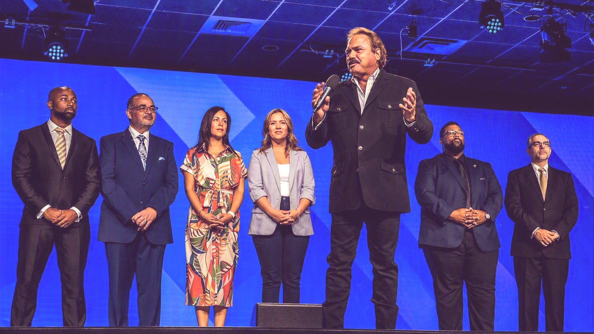
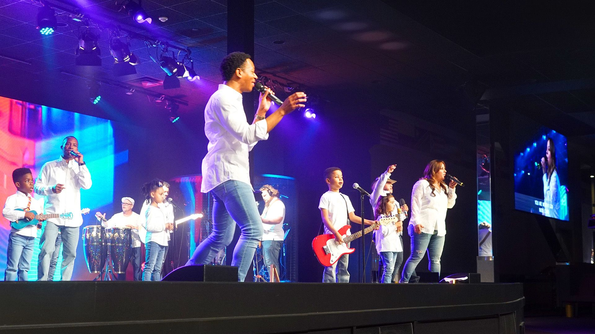

“Seek first the Kingdom of God.”
MATTHEW 6:33

KINGDOM LIFE CHRISTIAN CHURCH · MILFORD
A FAITHWE LIVETOGETHER.
Gather in worship. Grow in community. Carry hope into the world.

ONE CHURCH. MANY STORIES.01 / WELCOME TO KINGDOM LIFE
Church is more
than a place.
It’s a family.
Whether this is your first time in church or your first time in a while, there is room to find connection, encouragement, and a next step in faith.

02 / FIND YOUR PLACE
Life together,
in every season.
Start with a Sunday. Find the next step that fits the questions, people, and purpose on your heart.
Find people who celebrate, support, and encourage you as you follow Jesus.
EXPLORE LIFE GROUPS 02 / QUESTIONSAlphaExplore life, faith, and meaning through honest conversation.
EXPLORE ALPHA 03 / LEARNINGWednesday NightBible-centered courses to learn, connect, and grow in faith.
SEE DISCIPLESHIP COURSES 04 / BELONGINGMembershipLearn KLCC’s culture, discover your purpose, and become part of its story.
EXPLORE MEMBERSHIP03 / EVERY GENERATION
There’s a
place for you.
KLCC’s vision is intergenerational. Its leaders and ministries make room to grow in faith, from Kingdom Kids through adult community.

FAITH BEYOND SUNDAY
Love becomes
something
you do.
Serve the church. Care for the community. Discover where your gifts can make a difference.
Find a place to serve04 / OUR PURPOSE
REACH PEOPLE.BREAK DOWN WALLS.SERVE WITH LOVE.

BEGUN IN 1991 WITH ABOUT 40 PEOPLE.
KLCC’s mission is to proclaim and demonstrate the gospel of the Kingdom. Its vision includes restoration, preparing the next generation, and serving the community with humility and compassion.
OUR MISSION & VISION ↗05 / JOIN FROM ANYWHERE
Be here.
Or tune in.
Worship with us on Sunday at the Cathedral or watch the service online. Previous messages are here when you need them.

06 / YOUR FIRST SUNDAY
COME AS YOU ARE.
WE’LL SEE YOU SUNDAY.
Worship begins at 10:00 AM at the Cathedral in Milford. Find the details before you arrive.
SUNDAY WORSHIP1455 NAUGATUCK AVENUE
MILFORD, CONNECTICUT